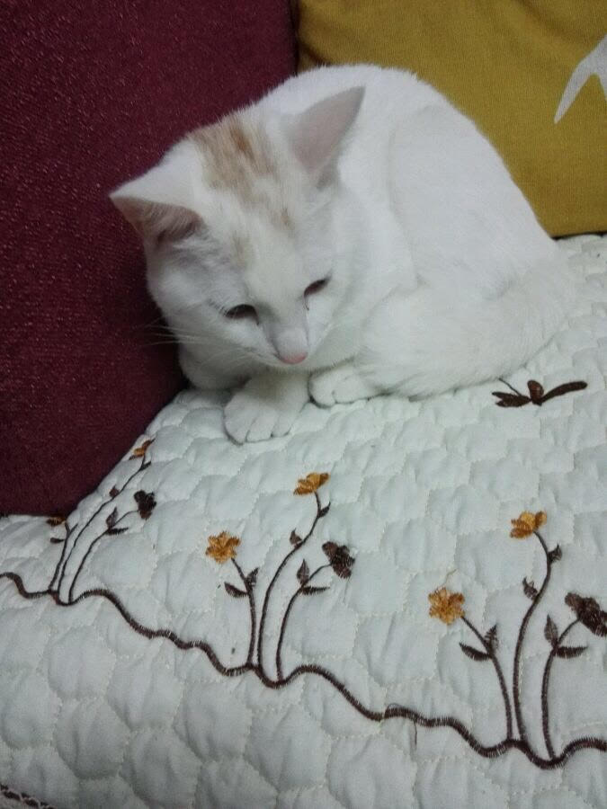
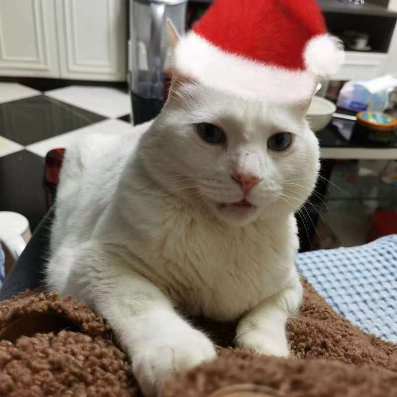
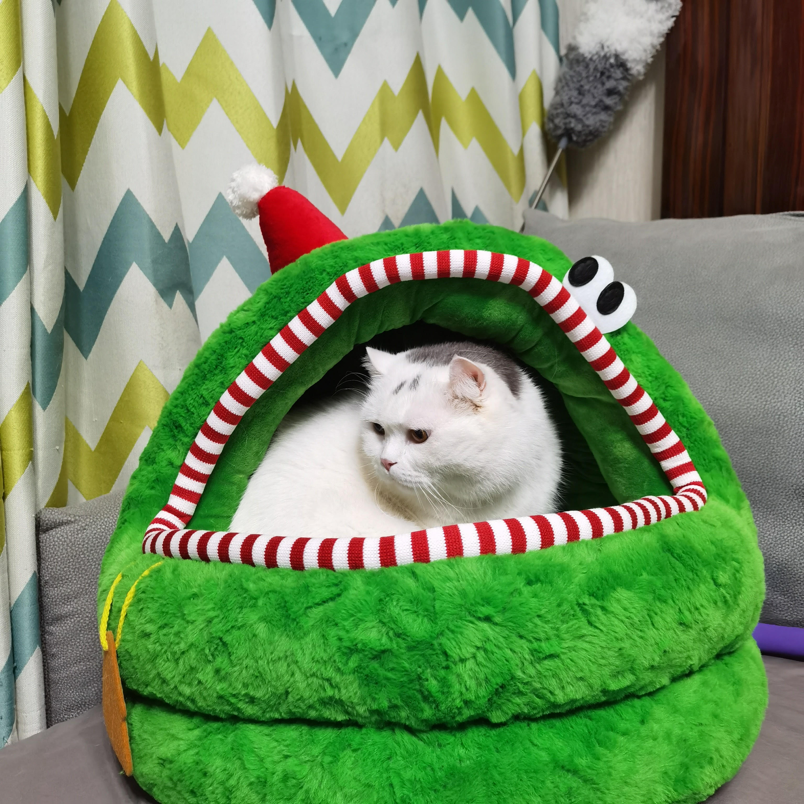
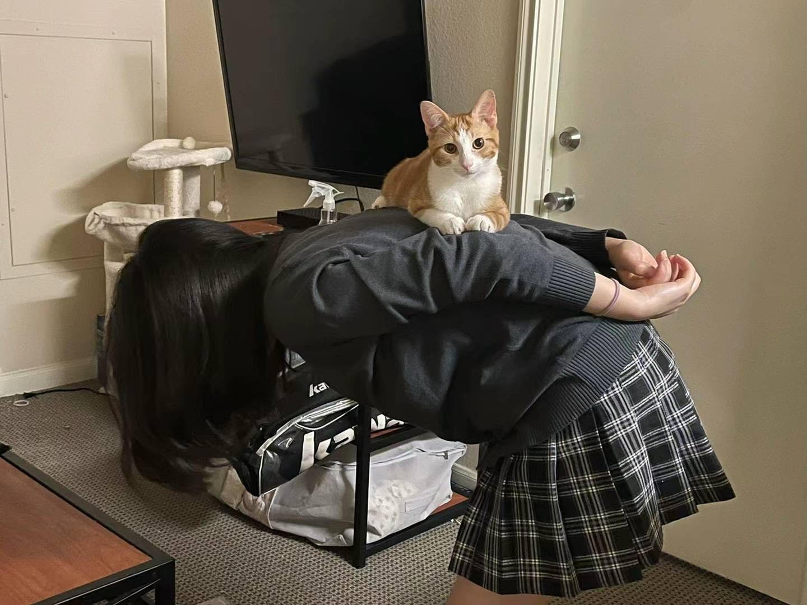
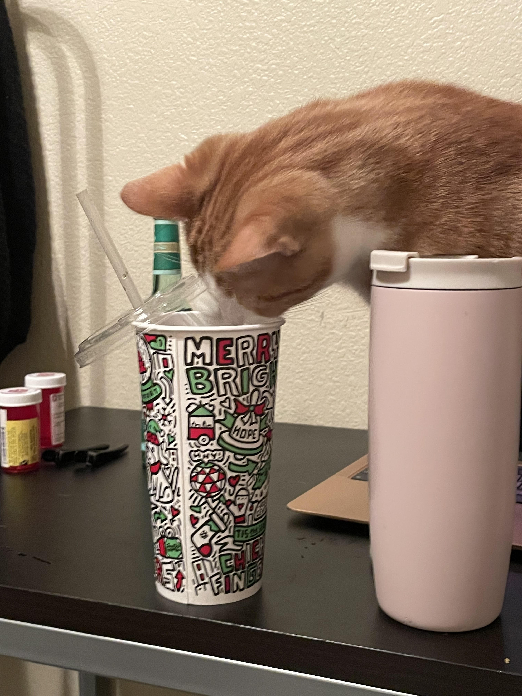

🐣 🎀 𝑀𝓎 𝒜𝓃𝒾𝓂𝒶𝓁 𝐻𝒾𝓈𝓉💮𝓇𝓎 🎀 🐣: I am an animal lover since I was very young. So, I had and are having a lot of animals! Include but not limited to: 7 hamsters, 4 fish, 1 bunny. 2.5 cats, 2 birds, 2 ducks, 2 chicken, 2 snails, and I don't know, like 20-30 silkworms. 🆄🅽🅵🅾🆁🆃🆄🅽🅰🆃🅴🅻🆈, 🅼🅾🆂🆃 🅾🅵 🆃🅷🅴🅼 🅳🅸🅴🅳 🆆🅸🆃🅷🅸🅽 3 🅼🅾🅽🆃🅷🆂. So in this page, I will only introduce my 2.5 cats(You will figure out why there is a 0.5 later...)
ℂ𝕙𝕒𝕡𝕥𝕖𝕣 𝟙: 𝕏𝕚𝕒𝕠𝕓𝕒𝕚
My story with cats starts with Xiaobai. The meaning of his name is "little white", because when I adopted him, he was still a 1.5 months little baby. And, obviously, he is a white cat. I tried to give him some fancy names like Stanford, but he likes "xiaobai" the most. Adopting Xiaobai is actually related to America. In the summer of 2015, I went to Boston to attend my aunt's wedding and I met so many new friends there. However, when I went back home, I was overwhelmed by loneliness. I begged my parents to allow me to have a cat, they finally approved after me crying for an hour. Then, I found this photo online, taken by his mom's owner. He was born on 07/12/2015, we met on 09/29/2015. Until now, in 2024, I still clearly remember the excitement to have him.
Xiaobai was 3 month old in this picture. He was super scared in the first several days, but he already adapted the new enviroment then. He was a typical couchpotato, never slept in his own "home", but slept on couch everyday. When I look back now, I feel so sad for him, maybe he hated us to separate him from his family. Also, since he is my first cat, I didn't really know how to take care of him. He ate dry cat food everyday, no treats, no can food, and seldom had meat. I was a terrible big sister.
Xiaobai was around 6 month now! This photo was taken in a sad night where I had a lot of homework. He sat on my desk and watched me do my homework. We were really close before he became an adult cat. He stayed with me when I do my homework, sleep and play all kinds of silly games together. To be honest, when I wrote the captions for my baby pictures, there was no emotion involved, I was like describing others' story. But now, I feel so sad and lonely, I want to travel back to 2015 or 2016 to spend that wonderful time with Xiaobai again. He was my best friend, I love him.
This is Xiaobai between 2018 and 2021. He gradually lost controls of his expression and behavior. Also, he gets fatter and fatter and never become skinny again....
These two pictures are Xiaobai in 2023 Christmas, so basically 10 days ago. He is a senior now and no longer likes fighting with people or other cats. He spent most of his days sleeping everywhere and begging for treats. It also makes me sad because Xiaobai is always a super energetic and naughty cat in my memory. Now, I have to accept the truth that he is old and he will no longer plays those silly game with me🥹.
ℂ𝕙𝕒𝕡𝕥𝕖𝕣 𝟙.𝟝: 𝔻𝕒𝕓𝕚𝕟𝕘
This is Dabing, which means big pie. It may not be too obvious in these photos but Dabing is a super big cat and weighs 20 pounds or more. He was a stray and my mom adopted him in the summer of 2020. But since Xiaobai doesn't like him, I don't like him. He is more like a family cat than my cat, so I named him Chapter 1.5. Even though I am not a big fan of him, but I have to admit that he has very good temper haha!
ℂ𝕙𝕒𝕡𝕥𝕖𝕣 𝟚:ℙ𝕠𝕥𝕒𝕥𝕠
This is Mr. Potato(Also Tudou or Doudou), he is the kitty living with me now! I adopted him from a shelter on 08/03/2023 and his approximate birthday is 04/26/2023, so in these pictures, potato is still a 3 month old little guy.
Potato is a weirdo. He likes toilet and trash can, they are his playgrounds lol. Me, a responsible mommy, tried thousands of time to help him get rid of this terrible habit, but Mr. Potato has his own idea😪
This was the first time potato met Sushi, she is my new roommate's kitty and she is 3 weeks older than Potato. They have a weird relationship since then. They like to eat each other's food and use each other's litter box. They also sleep together every night and play a lot with each other. However, Potato is an annoying bully, he attacked Sushi a lot(He also attacked me a lot...). So he is called an abuser right now.
Yes, this happens a lot, like at least 3 times a day. Potato enjoys riding on me and maybe in his little head, he's my owner. I have the evidence for it, in cat's society, licking others' fur means "I am superior than you" And....Potato licks me a lot. Even though he begs me for food and treats everyday and if I don't clean his litter box he will have no where to 💩. But so what? He is still the boss🤡
He thinks himself as a human. So he always yelled at me or even fighted with me to drink my Coke, milk, eat my oatmeal, cake and ice cream. Here are two photos of his crime. THIS HAPPENS EVERY SINGLE DAY!
Cats belong to the nature, so I think I should take potato out on a regular basis. However, he doesn't really enjoy it. Scared and cold, Potato just wants to go home!